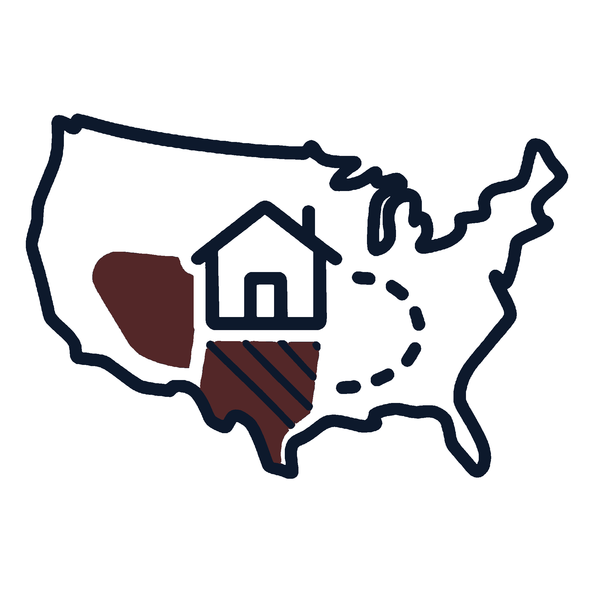
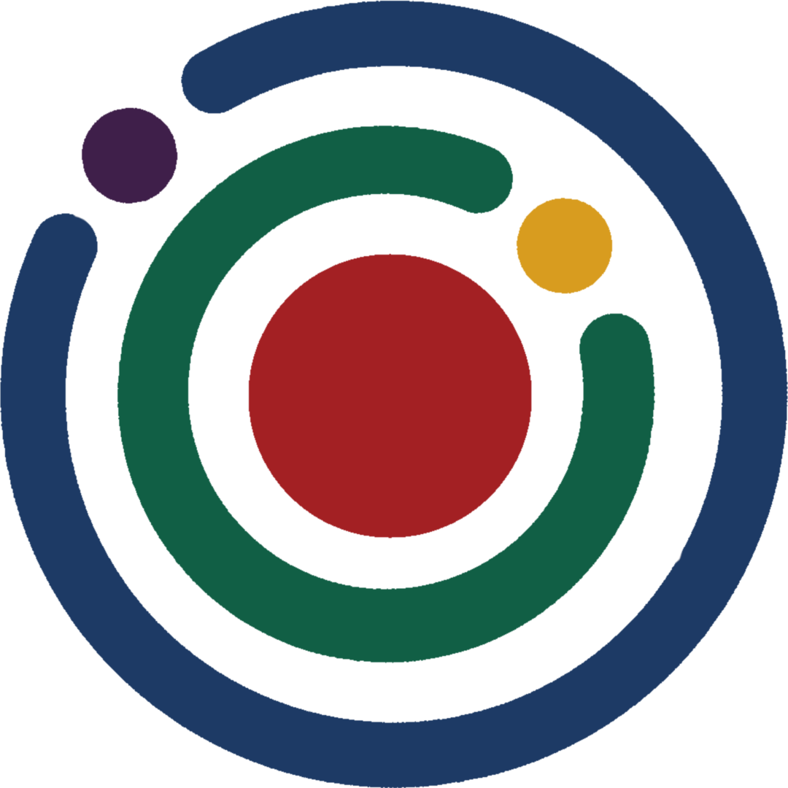
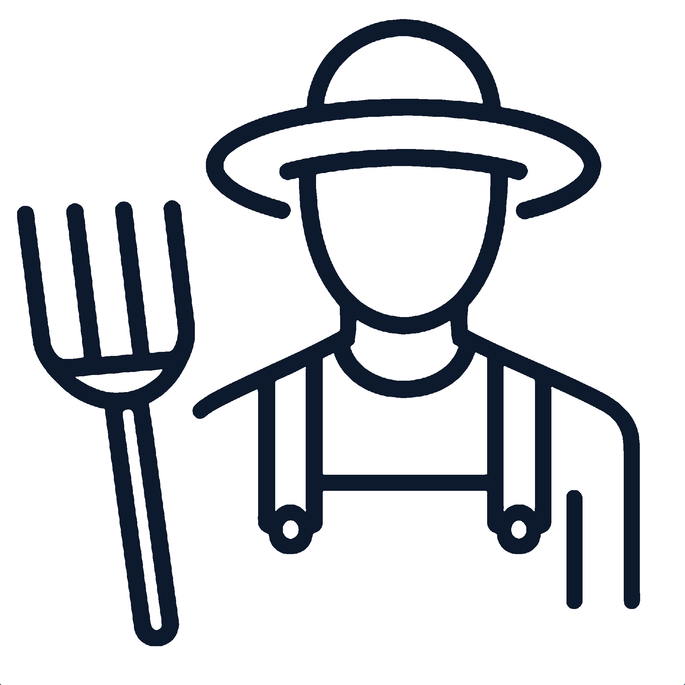
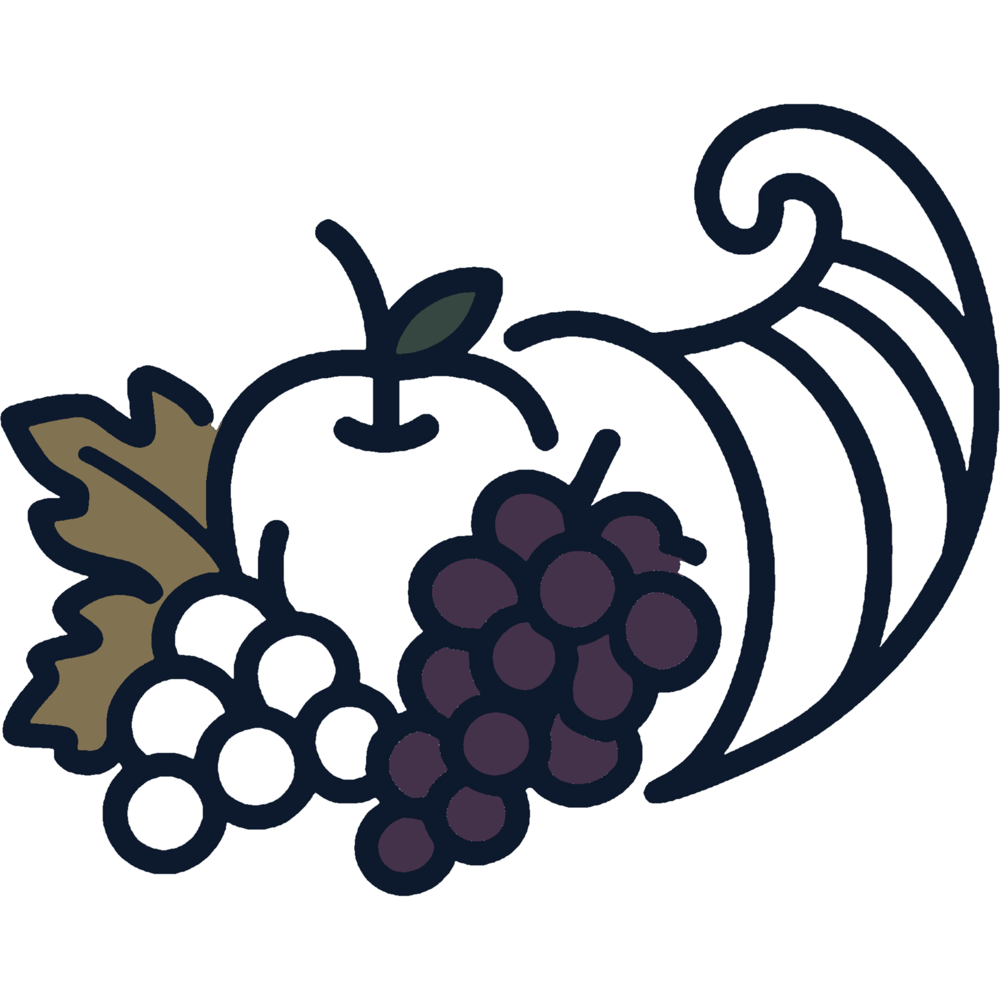
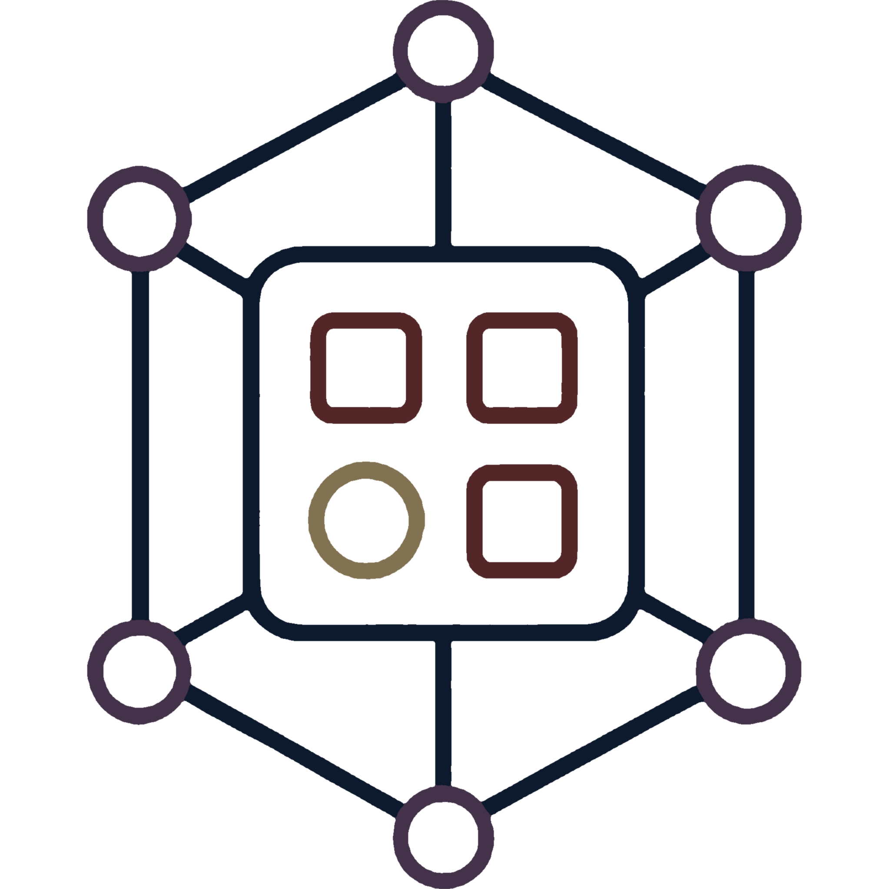
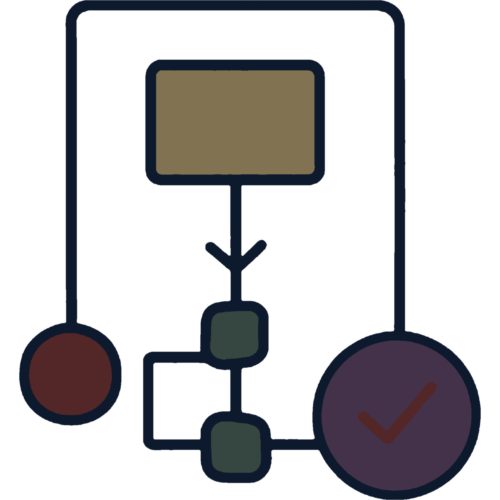

FRUITFUL NETWORK DEVELOPMENT
Empowering What's Better, To Out Compete What's Worse

FARMERS

CONSUMERS
We offer customers technology investment: hire us for web services at their current provider's price. We integrate 3rd parties with customer development for free; only charging for cloud hosting, as our ultimate goal is to provide free, open-source tools.
CONSULT
We work with clients to understand the nuance of their business and develop the tools their website uses Integrate what they have, and never pay for what they don't.

DEMO
This centralized application reduces logistical workload by syncing online sales, farm plans, and CSA fulfillment with supply invoices, inventory, weather data, and work calendars—eliminating duplicate data entry.

DEV
FND uses this new Application Framework to be flexible and customizable to create visual ontologies of a business and its operations and what a customer may want.
We are developing a digital system for local producers to list current/projected supply using farm management data. This shared data infrastructure mimics the efficiency of big agriculture. FND currently funds the project by offering basic hosting at market price, contributing to a decentralized network. Our 2-year goal is to deploy across 12 NE Ohio counties, aiming to recover $28 million in estimated local economic losses.
PERSONNEL
Dylan Montgomery
"Tend to the part of the garden you can touch," - Jack Kornfield
Fruitful Network Development
Founder & Managing Partner
Cuyahoga Valley
Computer Engineering & Mathematics
University of Akron
The Mission
READ MORE ->FND's novel data technology is a system where local producers can digitally offer up their supply (in stock or expected) from the same data they manage their farm operations. This creates a shared data infrastructure that is just as seamless and efficient as what big agriculture uses in a top down model. This enables them to improve local economies, maintain a personal touch, and compete on product quality; without giving up any autonomy or control of their farming operations or their digital rights. There is a public demand for sustainably grown, local, healthy options and but the current system makes it financially and logistically hard to incorporate local producers. As a result, these farms under perform their industrial counterparts at about 10% per acre; just with respect to output of perishable crops that can't be planned for growth due to isolated suppliers, buyers and middle shops. Producers manage their website, inventory, POS, taxes, farm planning, and events through our desktop application. This aims to revolutionize the industry by creating the first refrigerated trucking and produce brokerage optimized for small agricultural producers at the same level as large industrial partners.
The Code
SEE MORE ->